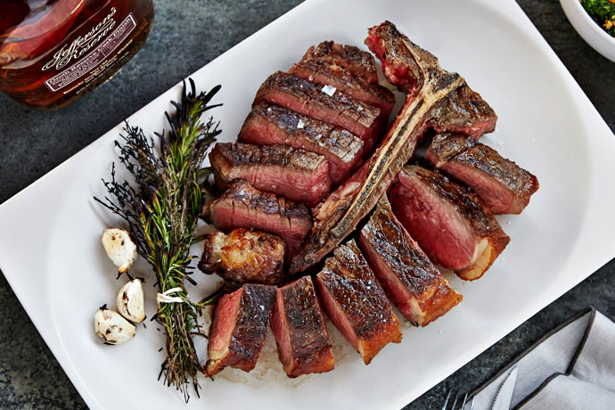

Perfectly Grilled Steak

Description
"Savor the pinnacle of flavor with a succulent Michelin star steak,
expertly grilled to perfection for an unparalleled culinary delight."
Ingredients
"Elevate your culinary skills: marinate prime steak, sear to perfection,
and embrace the art of Michelin star steak grilling."
Ingredients List
- 2 prime steak cuts (such as ribeye or filet mignon)
- 2 tablespoons olive oil
- 4 cloves garlic, minced
- 1 tablespoon fresh rosemary, chopped
- 1 tablespoon fresh thyme leaves
- Salt and freshly ground black pepper, to taste
Directions
-
Remove the prime steak cuts from the refrigerator and let them come to
room temperature.
-
In a bowl, mix olive oil, minced garlic, chopped rosemary, and fresh
thyme leaves to create a marinade.
-
Generously season the steaks with salt and freshly ground black pepper
on both sides.
-
Coat the steaks with the marinade, ensuring they are well covered. Let
them marinate for about 30 minutes.
- Preheat the grill to high heat.
-
Remove the steaks from the marinade and let excess marinade drip off.
-
Place the steaks on the hot grill and sear for a few minutes on each
side for the desired level of doneness.
-
Use a meat thermometer to check the internal temperature. For
medium-rare, aim for around 135°F (57°C).
-
Remove the steaks from the grill and let them rest for a few minutes to
allow juices to redistribute.
-
Slice and serve the perfectly grilled Michelin star steaks with your
favorite sides.